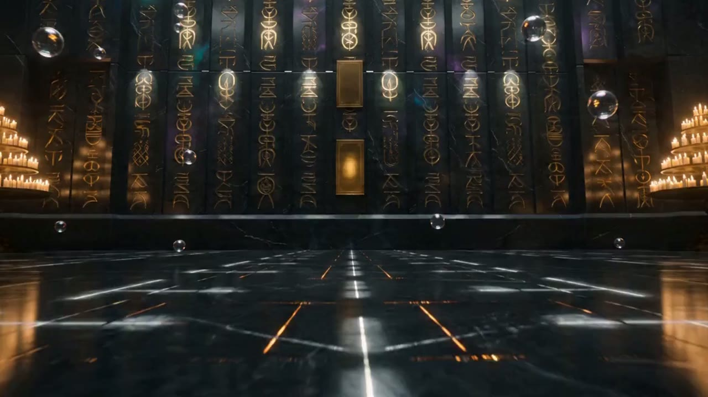

NorthStar Prime
The Founders Wall
The permanent record of the patrons who carried this work when it was young. Names engraved here remain on this wall, and in the credits of every NorthStar arcade game, for as long as NorthStar Prime exists.

AI-generated scene
The first name is unwritten
This plaque waits
This plaque waits
This plaque waits
Lifetime patronage membership: permanent placement on this wall and in every game's credits, lifetime Full Member + Mystery School access, one bespoke commissioned piece, and first-run numbered physical goods. This is patronage, not an investment — no equity, no profit share, no tokens with monetary value. Names are listed only with your consent.
Return to NorthStar Prime